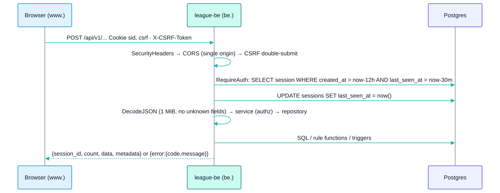

05 - Solution Architecture
Built as-built · Planned MVP · Target
5.1 Technology stack
| Layer | As-built (Built) | Target additions (Target) |
|---|---|---|
| Frontend | league-fe: single Vite 8 + React 19 SPA, TypeScript 6, Tailwind 4, shadcn (radix-nova), TanStack Query 5, react-router 7, axios, i18next |
Generated API types; live-scoring state store; Zalo Mini App build |
| FE hosting | Vercel, deployed by GitHub Actions on a version tag (vercel deploy --prebuilt --prod); git deploys off |
Preview deploys per PR |
| Backend | league-be: Go 1.26, net/http + gorilla/mux, pgx/v5 raw SQL, Google OIDC (go-oidc + oauth2), viper, swaggo |
internal/league (Planned), internal/scoring, worker |
| Database | PostgreSQL. Business rules in triggers and functions (Planned00002) |
Cloud SQL HA, PITR |
| Cache / realtime | — | Redis (Memorystore) for live scoring, rate limiting |
| Container | Docker multi-stage → distroless nonroot; image in Artifact Registry asia-southeast1-docker.pkg.dev/vincent-mini-apps-project/league-repository/league-service:<tag> |
— |
| Runtime | GKE (e2-medium nodes, per Makefile comments). No deploy manifests in the repo | Helm/Kustomize, migration Job, HPA |
| Edge / DNS | Cloudflare: www.mvip-league.com (FE), be.mvip-league.com (API) |
WAF rules, cache rules |
| Repos | Two repos: league-fe, league-be (GitHub org mini-apps-org) |
league-infra (Terraform) |
5.2 System context

5.3 Containers and deployment

Cookie topology. The FE and API are different hosts under one registrable domain (mvip-league.com):
__Host-sidis locked tobe.mvip-league.com(HttpOnly).__Secure-csrfis scoped toDomain=mvip-league.com, so the SPA onwww.can read it and echo it inX-CSRF-Token.
Both use SameSite=Lax, which works because the two hosts are same-site.
5.4 Backend module map

- One deployable Go service (a modular monolith). Modules expose
Service/Repositoryinterfaces. - Rules live in Postgres. Go decides who may act (roles, captain-owns-night); SQL decides what the numbers are.
5.5 Request lifecycle (Built)

5.6 Target Phase 2: realtime and offline
The live-scoring design (event log, scoring lease, Redis pub/sub, WebSocket fan-out, IndexedDB offline queue) is in 08. Constraints from the as-built system:
- Writes stay HTTP + cookies + CSRF.
- WebSocket auth uses the same
sidcookie (same-site), with no bearer tokens. - Idempotency keys travel in the request body, not in headers (keeps the CORS allow-list unchanged).
- The service worker keeps never caching HTML or API responses. Offline data goes to IndexedDB keyed by user.
5.7 Architecture decisions
These are the decisions already made in the repos. Record them as ADRs in each repo.
| ADR | Decision | Rationale | Source |
|---|---|---|---|
| ADR-001 | net/http + gorilla/mux, not a full framework |
Thin handlers, stdlib middleware | league-be/go.mod |
| ADR-002 | Raw SQL with pgx, house convention (const query + named args []any), no ORM/sqlc |
Rules-critical SQL stays explicit and reviewable | .claude/rules/database.md |
| ADR-003 | Opaque server-side sessions in cookies, not JWT + refresh | Revocable sessions, nothing in JS storage; the cost is CSRF, handled by double-submit | internal/auth/README.md |
| ADR-004 | Business rules in Postgres triggers/functions; the TS mirror is only a preview | A manual SQL correction gives the same numbers as the app; one source of truth. Revisit for live scoring | plan.md, plan-2 |
| ADR-005 | SL and race are snapshotted at put-up | A later SL change never rewrites a played match | individual_matches columns |
| ADR-006 | RBAC tables (roles, permissions, users_roles), no users.role column |
One source of truth; /me derives the role by precedence |
plan-1 |
| ADR-007 | app-id header retired (codes 40002/40303 retired) |
One app, own database; GETs stay CORS-simple (no preflight) | plan-3 |
| ADR-008 | Closed dependency list in the FE | Small surface; additions need approval | plan.md |
| ADR-009 | Google sign-in only for the MVP; users link their member ID at onboarding | Fastest secure login; Zalo/OTP deferred | plan-4, login plan |
| ADR-010 | Release by version tag (*.*.*) in both repos |
Explicit, auditable releases; FE guard requires the tag on master |
cd.yaml, release.yaml |
| ADR-011 | UUID v4 for league entities, TEXT ids for users/sessions |
Matches auth.User.ID string; avoids retyping auth code |
00001_init.sql |
| ADR-012 | Event-sourced live scoring with Redis | Target Proposed for Phase 2, not yet accepted | 08 |